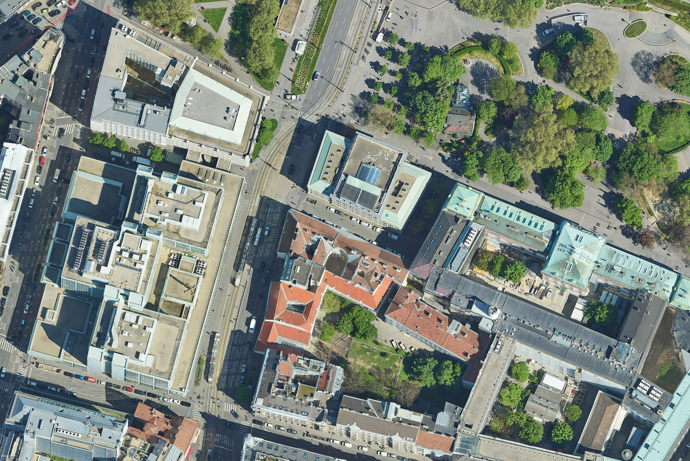
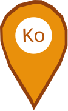
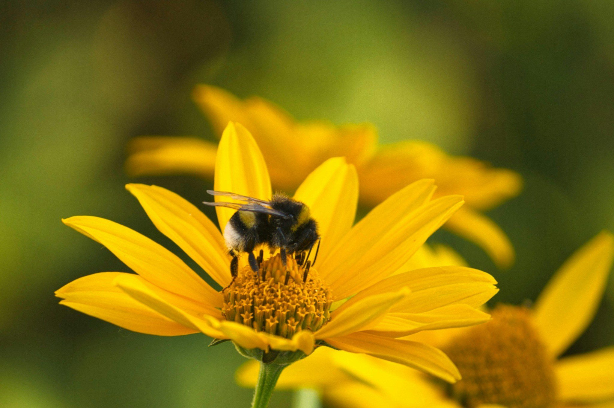

Map A - Static Map of TU Wien Campus

Kuppelsaal der TU Wien
Bibliothek (Library)
Technische Universität Wien Freihaus

Die Kopie TU WienSource: Google Earth Pro
Bumblebee on Sunflower
The image below shows a bumblebee pollinating a yellow sunflower in summer. Pollinators play a vital role in our ecosystems. The <picture> element below serves a high-resolution file to HiDPI / Retina screens, and the standard version to all other devices.
